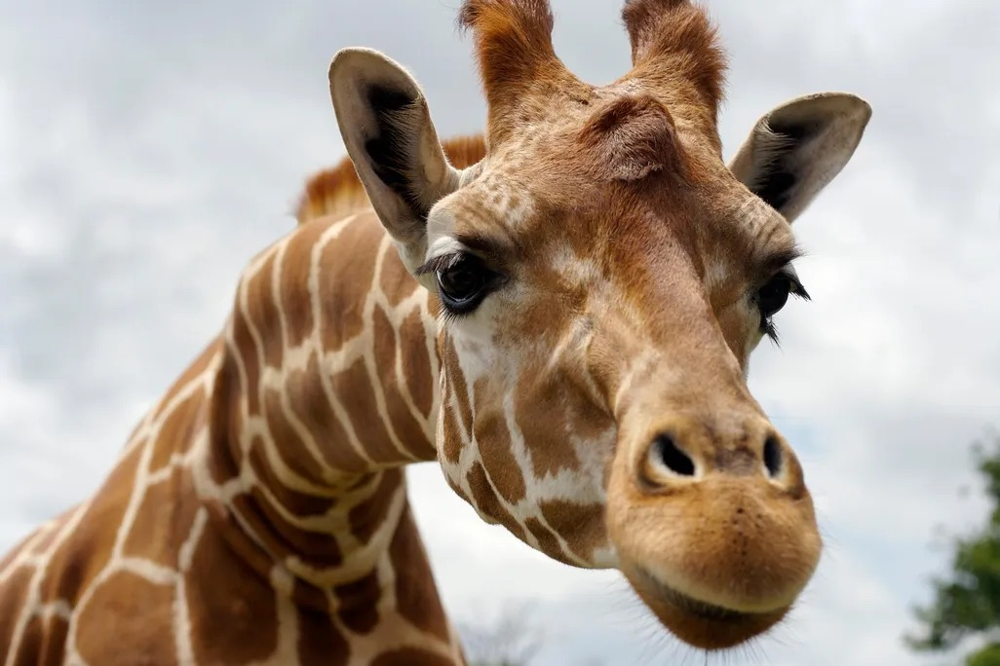

Born in Atlanta, Georgia, I made the cross-country move to San Diego at the age of six, and it has been home ever since. I am currently a junior at Canyon Crest Academy in the Del Mar area, where I compete on the varsity tennis team and actively participate in our school's DECA chapter. Outside of academics, I work part-time as a dog sitter and genuinely love spending quality time with my family. Sports have always been a big part of my life — I have competed in five different sports, with tennis, soccer, and swimming standing out as my favorites. In my free time, I also find myself drawn to the animal world, particularly the early stages of animal development and all the wonder that comes with it.

One of my more unexpected talents is an encyclopedic knowledge of obscure animal facts — something friends and family have come to both appreciate and expect from me. While I don't claim a single favorite animal, I am particularly fascinated by giraffes and penguins, two creatures that seem almost too extraordinary to be real. I have always been a devoted dog lover, and more recently I have developed a genuine appreciation for cats as well. Much of that shift in perspective comes down to one cat in particular: Richard Parker, my brother's one-year-old grey shorthair with striking yellow-green eyes. Richard has quietly but decisively won me over, and with each passing year, I find myself becoming more of a cat person than I ever expected.

In the years to come, I hope to experience as much of the world as possible, including spending a few months living in New York City before eventually returning to San Diego, the place I will always call home. Academically, I aspire to pursue a degree at UCSD or at a university abroad in Europe, with a long-term goal of attending the Wharton School of Business and building a career in consulting. Beyond professional ambitions, I hope to adopt a cat, learn to surf and snowboard, and finally make it to Europe. I also have a creative side I am eager to explore — specifically through pottery, with a dream of one day designing my own line of plates and mugs inspired by my favorite books.